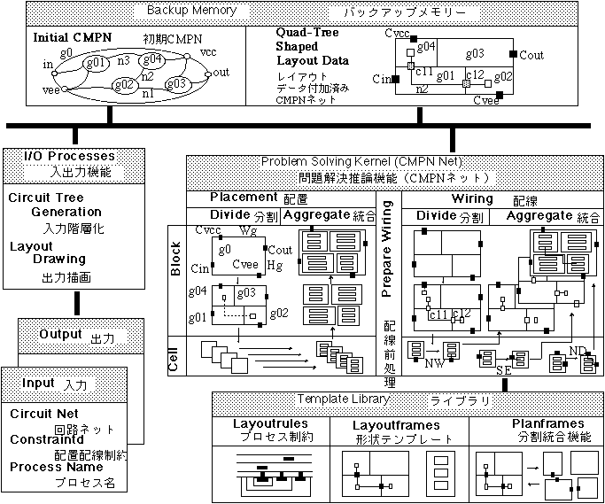

（６５）階層再帰並列レイアウト実験システム：Ｃｏ−ＨＬＥＸ
マ シ ン：Multi-PSI, PIM
環 境：PIMOS
言 語：KL1
ソース量：3.5 MB
文 書：なし
概要
回路データとレイアウト予定形状をもとにレイアウト図を作成するシステム。
構成

機能
回路レイアウト実験システムの試作を通して、並列協調新算法の可能性、並列
論理型言語 KL1 の仕様記述性、並列推論マシンの問題解決能力を実証するこ
とを目的として開発した。フラットな入力回路ネットデータからレイアウト用
階層プロセスネットを自動生成し、階層再帰並列協調算法 (HRCTL:フラクタル)
を用いて、予定外形内に回路の配置・配線を生成し、得られたレイアウトを表
示する。HRCTL は、現状の計算機処理対象問題の中でも、最も複雑なものの一
つである回路レイアウトにおける配置・配線の双方を簡潔な並列再帰形式で記
述したアルゴリズムであり、並列走行プロセス間の協調により、従来、階層処
理の弊害であった隣接ブロック間の形状、配線引き出し点の不整合問題を解決
できた。
ＦＴＰ
- 階層再帰並列レイアウト実験システム：Ｃｏ−ＨＬＥＸ [397K]

www-admin@icot.or.jp